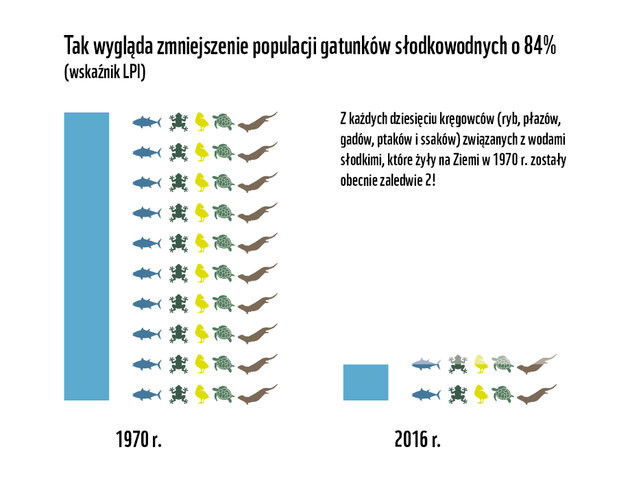
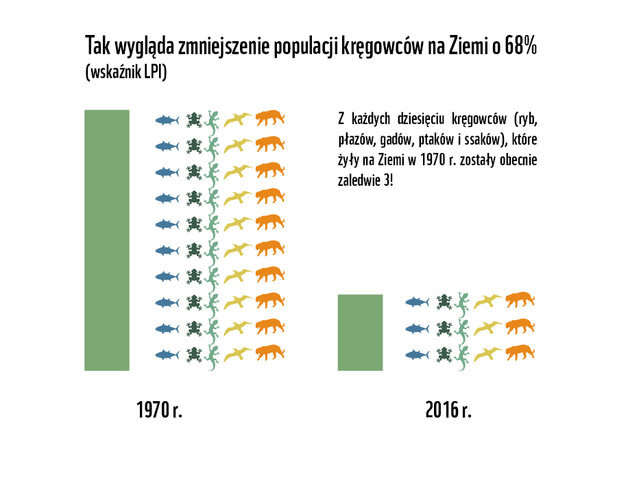

Przez niecałe pół wieku łączna liczebność populacji dzikich zwierząt kręgowych na Ziemi, czyli ssaków, ptaków, płazów, gadów i ryb zmniejszyła się o dwie trzecie! Poznaliśmy najnowszy raport WWF: Living Planet Report 2020.
Living Planet Report 2020 to wszechstronna analiza stanu środowiska naturalnego tworzona we współpracy z ponad 125 ekspertami z całego świata. Najważniejszym elementem raportu jest opracowany przez Londyńskie Towarzystwo Zoologiczne (ZSL) Wskaźnik Żyjącej Planety (wskaźnik LPI), który odzwierciedla globalne trendy w wielkości populacji dzikich zwierząt kręgowych. Tegoroczny wskaźnik LPI objął niemal 21 000 populacji i ponad 4000 gatunków kręgowców między 1970 a 2016 rokiem. Diagnoza? W skali globalnej średnia liczebność populacji ssaków, ptaków, płazów, gadów i ryb zmniejszyła się o 68%!

